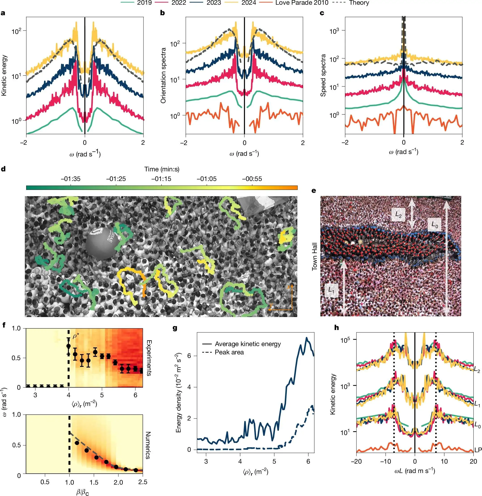

引言：从离散微观模型到连续场论¶
第13讲 建立了描述二元混合物（如聚合物共混物、合金）相行为的热力学基石。通过 格子气模型 (Lattice Gas Model) 和 Flory-Huggins 平均场理论，不仅推导出了混合熵（倾向于无序）与相互作用能（倾向于聚集）竞争的物理图像，还揭示了自由能景观（Free Energy Landscape）随相互作用参数 \(\chi\) 的演化规律。
当 \(\chi\) 超过临界阈值时，自由能密度函数 \(f(\phi)\) 从单势阱突变为双势阱结构。虽然静态热力学势能面成功预言了系统必然发生相分离以及最终的平衡态浓度（即双节线上的共存值），但它无法回答关于过程的核心问题：系统如何突破单一均匀态的束缚？相分离的时空路径是怎样的？
第14讲将从“静态平衡”转向“非平衡动力学”。这是继第9讲引入非守恒型序参量动力学（Ginzburg-Landau/Allen-Cahn 方程，即 Model A）之后，对动力学理论的进一步完善与扩充。
与 Model A 不同，这节课聚焦于 守恒序参量 (Conserved Order Parameter) ——即局域浓度 \(\phi(\vec{r},t)\) 必须满足连续性方程。在这一框架下推导出的 Cahn-Hilliard 方程 (Model B)，捕捉了自然界中一种反直觉的物理现象——逆向扩散 (Uphill Diffusion) 。在相分离的早期（旋节分解区域），物质不再遵循由高浓度向低浓度流动的常规费克定律，而是自发地从低浓度区域向高浓度区域聚集，导致浓度梯度的自发增强与界面的形成。

这节课首先阐述自由能泛函的连续化过程，从离散的 Flory-Huggins 自由能出发，经由泰勒展开构建出 Ginzburg-Landau 有效自由能泛函，并引入平方梯度项以表征对空间非均匀性的能量惩罚。基于此泛函求解欧拉-拉格朗日方程，导出两相之间特征的双曲正切（\(\tanh\)）平衡态界面轮廓及其表面张力，这一静态解与第10讲中的界面动力学形成了理论呼应。
结合质量守恒定律与线性非平衡热力学通量（Flux），推导出控制相分离演化的四阶偏微分方程——Cahn-Hilliard 方程。在此基础上，利用线性稳定性分析 (LSA) 及傅里叶模态分解，解析均匀态在微扰下的不稳定性机制，推导出色散关系 \(\omega(q)\) 并确定决定早期纹理尺度的 最快生长模式 (Fastest Growing Mode) 。最终，描述出系统从初期的 旋节分解 (Spinodal Decomposition) 到晚期 粗化 (Coarsening) 的完整动力学演化图景。
这节课主要聚焦于热力学不稳定区域（\(f''(\phi)<0\)）内的自发相分离机制。对于亚稳态区域（Metastable Region）内涉及能垒跨越的液滴成核与生长机制，将在下一讲介绍。
1. Ginzburg-Landau 自由能泛函的构建¶
为了描述相分离过程中空间上连续变化的浓度场 \(c(\vec{r}, t)\)，物理描述必须完成一次根本性的数学升级：从仅依赖于标量变量的普通函数 \(F(c)\)，转变为依赖于整个空间场分布的泛函 (Functional) \(\mathcal{F}[c(\vec{r})]\)。这一过程被称为 Ginzburg-Landau 展开，它不仅是本课程处理自组织行为的基石，也是现代凝聚态物理处理对称性破缺与相变问题的通用语言。这节课将从微观的晶格模型出发，严格推导这一宏观场论描述。
1.1 从 Flory-Huggins 到 Landau 多项式展开¶
回顾第13讲中推导的二元混合物（组分A和B）的无量纲自由能密度 \(f_{FH}(\phi)\)。在平均场近似下，该自由能由混合熵（Entropic contribution）和相互作用焓（Enthalpic contribution）两部分竞争而成：
其中各项物理意义如下： - \(\phi(\vec{r})\)：代表组分A的局域体积分数（序参量），取值范围 \(0 \le \phi \le 1\)。
-
\(v\)：晶格单元体积（分子体积）。
-
\(\chi\) (Chi)：Flory-Huggins 相互作用参数。其物理本质来源于不同分子间的接触能差异 \(\chi \propto \frac{z}{k_B T} [u_{AB} - \frac{1}{2}(u_{AA} + u_{BB})]\)。\(\chi\) 值越大，表明 A-B 接触的能量代价越高，同种粒子越倾向于聚集以降低总能。
当系统处于临界点附近时，序参量 \(\phi\) 会在临界浓度 \(\phi_c = 1/2\) 附近发生微小涨落。为了捕捉相变的普适特征并简化数学处理，在 \(\phi_c\) 附近对 \(f_{FH}\) 进行泰勒展开。定义序参量相对于临界值的偏差（微扰）为：
利用对数函数 \(\ln(1/2 \pm x)\) 的泰勒级数展开：
以及相互作用项的改写 \(\phi(1-\phi) = (1/2+\delta \phi)(1/2-\delta \phi) = 1/4 - (\delta \phi)^2\)。
将上述展开代入原始自由能表达式，忽略掉不影响动力学性质的常数项和可以通过化学势重定义消除的线性项，最终得到 Landau 型多项式自由能密度：
此式清晰地展示了决定系统命运的两个关键系数：
1. 二次项系数 \(r_{eff}\)（控制相变发生的开关）：
由熵项的二阶导数（正贡献）与相互作用项的二阶导数（负贡献）叠加而成：
-
当 \(\chi < 2\)（高温或弱相互作用）：\(r_{eff} > 0\)，自由能密度在 \(\delta \phi = 0\) 处为极小值（势阱），系统处于单一均匀相的稳定状态。
-
当 \(\chi > 2\)（低温或强相互作用）：\(r_{eff} < 0\)，自由能密度在 \(\delta \phi = 0\) 处变为极大值（势垒），原点失稳，系统发生自发对称性破缺。
2. 四次项系数 \(u\)（提供热力学稳定性）：
主要源于熵项的高阶展开：
\(u\) 必须恒为正值。这一项提供了非线性饱和机制，防止在 \(r_{eff} < 0\) 时浓度波动无限放大。它就像一个“碗壁”，将系统约束在有限的浓度范围内，最终确定了两个共存相的平衡浓度 \(c_{eq} = \pm \sqrt{|r_{eff}|/u}\)。
为了符合 Cahn-Hilliard 动力学文献的通用记号，并方便后续推导，通常定义一个正参数 \(r > 0\) 来描述不稳定区域的曲率模。令 \(c \equiv \delta \phi\)，在淬火至不稳定区 (\(T < T_c\)) 的条件下，局域自由能密度写作标准形式：
1.2 空间非均匀性的代价：梯度能量项¶
上述 \(f_{loc}(c)\) 仅适用于空间完全均匀的系统（局域近似）。然而，相分离的物理本质是形成富 A 相与富 B 相的区域，这必然导致在两相之间形成界面 (Interface) 。界面意味着序参量 \(c(\vec{r})\) 在空间上存在剧烈变化，破坏了局部近邻的键合环境，因此在能量上是有代价的。
为了描述这种空间非均匀性带来的能量惩罚，Ginzburg 和 Landau 引入了依赖于序参量梯度的项。基于空间旋转不变性（Isotropy）和对称性考虑，最低阶的非零梯度项为 \((\nabla c)^2\)。
将局域势能与梯度能结合，得到总自由能泛函 \(\mathcal{F}[c]\)：
此式即为著名的 Ginzburg-Landau 自由能泛函。其中梯度系数 \(\kappa\) (Kappa) 具有明确的物理约束与微观起源：
物理意义：\(\kappa\) 代表了界面的“硬度”或能量罚分强度。它直接决定了相界面的表面张力大小。
微观联系：在从微观理论推导时，\(\kappa\) 与分子间相互作用的力程 (Interaction Range) \(\lambda\) 密切相关，近似满足 \(\kappa \approx k_B T \chi \lambda^2\)。这意味着相互作用范围越长，形成急剧变化的界面所需的能量代价就越高。

对比：Flory-Huggins 与 Ginzburg-Landau¶
为了展示从微观离散模型到宏观连续场论的映射关系，下表总结了两个理论框架的核心对应：
| 特性 | Flory-Huggins (微观/离散) | Ginzburg-Landau (宏观/连续场) |
|---|---|---|
| 基本变量 | 离散格点上的体积分数 \(\phi_i\) | 连续空间中的序参量场 \(c(\vec{r})\) |
| 控制参数 | 相互作用参数 \(\chi\) (无量纲) | 二次项系数 \(r\) (具有能量密度量纲) |
| 相变驱动力 | 焓与熵的非线性竞争 | 多项式势阱的翻转 (\(f''(0)<0\)) |
| 空间关联 | 隐含在平均场假设中 (忽略关联) | 显式通过梯度项 \(\frac{\kappa}{2} (\nabla c)^2\) 描述 |
| 自由能形式 | 对数形式 (Logarithmic) \(\phi \ln \phi\) | 多项式形式 (Polynomial) \(c^2, c^4\) |
| 适用范围 | 任意浓度 \(0 \le \phi \le 1\) | 临界点附近 \(c \approx 0\) (长波近似) |
2. 平衡态性质：界面轮廓与表面张力¶
在深入研究 Cahn-Hilliard 动力学演化方程之前，必须先确立系统的静态平衡基准。当相分离完成时，系统并非处于单一的均匀态，而是形成了共存的富集相与贫瘠相。连接这两个体相（Bulk Phases）的区域即为界面。界面的具体结构——它有多宽？它蕴含了多少能量？——完全由 Ginzburg-Landau 自由能泛函的变分性质决定。这小节首先通过求解泛函极值问题，解析界面的平衡轮廓，并由此推导出表面张力的微观表达，为后续理解由曲率驱动的粗化过程奠定物理基础。
2.1 欧拉-拉格朗日方程 (Euler-Lagrange Equation)¶
平衡态对应于总自由能泛函 \(\mathcal{F}[c]\) 的极小值点。根据变分法原理，要使泛函 \(\mathcal{F}\) 对场变量 \(c(\vec{r})\) 取极值，浓度场必须满足欧拉-拉格朗日方程。这在物理上等价于要求广义化学势 \(\mu = \delta \mathcal{F}/\delta c\) 在全空间为常数（在无外场且对称势阱下，该常数为0）。
对于上一节构建的泛函 \(\mathcal{F} = \int [f_{loc}(c) + \frac{\kappa}{2} (\nabla c)^2] d^d r\)，其变分导数计算如下：
令变分导数为零（\(\mu = 0\)），即得到描述平衡态界面轮廓的微分方程：
这一方程揭示了界面形成的物理机制：梯度的扩散项 \(\kappa \nabla^2 c\)（倾向于平滑化）必须与局域势能的驱动力 \(f'_{loc}(c)\)（倾向于分相）在每一点达到力学平衡。
2.2 界面轮廓解 (Interface Profile)¶
为了解析界面的具体形状，考虑最简单的一维情形。假设界面垂直于 \(x\) 轴，浓度场 \(c(x)\) 仅随 \(x\) 变化。在 \(T < T_c\) 的双势阱条件下，局域自由能导数为 \(f'_{loc}(c) = -rc + uc^3\)。代入上述方程，问题转化为求解一个非线性二阶常微分方程：
边界条件：界面连接了两个热力学稳定的共存相，因此在无穷远处，浓度必须趋于势阱的两个极小值点：
该方程存在一个著名的解析解，被称为双曲正切解 (Kink Solution) 或孤子解：
在此解中，自然涌现出一个关键的长度尺度——关联长度 (Correlation Length) 或 界面宽度 (Interface Width) \(\xi\)：
物理意义：
界面宽度 \(\xi\) 的表达式 \(\sqrt{\kappa/r}\) 清晰地体现了两种竞争机制的平衡：
-
分子： 梯度系数 \(\kappa\)。\(\kappa\) 越大，非均匀性的能量代价越高，系统倾向于拉宽界面以减缓梯度变化，导致 \(\xi\) 增大。
-
分母： 势阱深度参数 \(r\)。\(r\) 越大，双势阱越深，同种粒子聚集的倾向越强，系统倾向于压缩界面以使更多粒子处于低能的体相中，导致 \(\xi\) 减小。
当温度趋近于临界点 (\(T \to T_c\)) 时，由于 \(r \propto (T_c - T)\) 趋于 0，界面宽度 \(\xi \propto (T_c - T)^{-1/2}\) 将趋于无穷大。这意味着在临界点附近，两相之间的界限变得极其模糊，宏观界面消失，这与实验中观测到的临界乳光 (Critical Opalescence) 现象契合。
2.3 界面张力 (Interface Tension) 的计算¶
界面张力 \(\gamma\) 是相分离动力学的核心驱动力之一（如 Laplace 压强）。其定义为：引入一个界面相对于同体积的单一均匀体相所增加的额外自由能。数学表达为全空间的能量密度积分：
其中 \(f_{min} = f(c_{\pm})\) 是体相的平衡自由能密度。 直接积分双曲正切函数较为繁琐，这节课介绍一种利用能量均分恒等式 (First Integral of Motion) 的巧妙方法。类似于经典力学中的能量守恒，在满足欧拉-拉格朗日方程的平衡路径上，梯度能密度与局域势能增量在数值上严格相等：
利用这一恒等式，我们可以将积分变量从空间坐标 \(x\) 变换为序参量 \(c\)，从而避开复杂的空间依赖性：
代入双势阱形式 \(f_{loc}(c) - f_{min} = \frac{u}{4}(c^2 - c_0^2)^2\)，积分变为：
经过计算（\(\int (c_0^2 - c^2) dc = \frac{4}{3}c_0^3\)），最终得到 Landau 理论下的表面张力普适公式：
这一公式深刻地联系了宏观与微观：宏观可测量的表面张力 \(\gamma\)，完全由微观的相互作用参数（\(r, u, \kappa\)）决定。
温度依赖性： 考虑到 \(r \propto (T_c - T)\) 且 \(u \approx const\)，可知 \(\gamma \propto (T_c - T)^{3/2}\)。
临界行为： 当 \(T \to T_c\) 时，表面张力以 1.5 的临界指数趋于零，这解释了为什么在临界点附近液滴极易变形且界面极不稳定。

3. 非平衡动力学：Cahn-Hilliard 方程推导¶
构建了描述系统静态能量特征的 Ginzburg-Landau 泛函 \(\mathcal{F}\) 之后，理论构建的重心随之转移至系统的时空演化机制。静态自由能仅指明了系统的“归宿”（平衡态），而动力学方程则描述了系统如何穿越复杂的能量景观到达那里的“路径”。对于二元混合物的相分离问题，其动力学行为受到一个最基本的物理铁律约束：质量守恒。本节在此约束下，严格推导描述相分离普适动力学的运动方程。
3.1 守恒律与 Model B 分类¶
与磁性系统（如 Ising 模型中的自旋翻转）不同，二元混合物中的组分 A 分子既不会凭空产生也不会凭空消失，只能通过物理空间的输运发生位置迁移。这种动力学性质在 Hohenberg 和 Halperin 的分类中被称为 Model B（相比之下，序参量不守恒的弛豫动力学被称为 Model A 或 Allen-Cahn 方程）。
因此，浓度场（序参量）\(c(\vec{r}, t)\) 的演化必须严格遵循连续性方程：
其中 \(\vec{J}(\vec{r}, t)\) 表示物质流通量密度。这一守恒约束深刻地改变了系统的动力学行为：任何局域浓度的改变都必须伴随着物质的长程流动，导致长波模式（大尺度结构）的弛豫时间极长，这与非守恒系统中序参量可以直接局地弛豫的行为形成了鲜明对比。
3.2 广义热力学力与化学势¶
为了封闭方程，必须建立通量 \(\vec{J}\) 与系统状态量之间的关系。根据非平衡热力学（Onsager 线性响应理论），驱动物质流动的根本原因并非单纯的浓度梯度（Fick 定律仅是理想稀溶液下的特例），而是广义化学势的梯度。物质总是从高化学势区域流向低化学势区域，因此通量与广义热力学力成正比：
在此关系式中：
\(M\)：迁移率 (Mobility) 。它表征了粒子在介质中运动的难易程度。在基础理论推导中，通常假设 \(M\) 为常数（各向同性且均匀）。但在更精细的聚合物动力学模型中，\(M\) 往往依赖于局部浓度，例如 \(M(c) \propto 1-c^2\)（反映纯组分区域的迁移受限），这节课主要关注 \(M\) 为常数的最简情形。
\(\mu\)：广义化学势 (Generalized Chemical Potential) ，对应于交换化学势 \(\mu_{ex} = \mu_A - \mu_B\)。
3.3 变分导数确定化学势¶
Ginzburg-Landau 理论的核心在于，这里的化学势 \(\mu\) 不再是简单热力学函数的偏导数，而是自由能泛函 \(\mathcal{F}\) 对场变量 \(c(\vec{r})\) 的泛函导数 (Functional Derivative) 。这引入了空间非局域的相互作用：
物理意义：
局域贡献：源于 Flory-Huggins 双势阱，驱动系统向平衡浓度演化。
界面贡献 (\(-\kappa \nabla^2 c\))：这一项至关重要，它代表了界面曲率对化学势的修正。在液滴内部（凸界面），浓度分布呈现“山峰”状，\(\nabla^2 c < 0\)，使得 \(-\kappa \nabla^2 c > 0\)，从而抬高了局域化学势。这正是经典的 Gibbs-Thomson 效应 在连续场论中的直接表达：曲率越大的液滴，其内部化学势越高，导致物质倾向于逃逸并扩散到大液滴中。这一机制直接驱动了相分离晚期的 Ostwald Ripening（奥斯特瓦尔德熟化）现象。
3.4 Cahn-Hilliard 方程 (Model B) 的完整形式¶
将由泛函导数确定的化学势 \(\mu\) 代入通量公式，再结合连续性方程，即可组装出著名的 Cahn-Hilliard 方程。这是一个描述守恒序参量在热力学不稳定区演化的四阶非线性偏微分方程：
在假定迁移率 \(M\) 为常数，并代入 Landau 多项式势能导数 \(f'_{loc}(c) = -rc + uc^3\) 后，方程展开为具体形式：
为了深入理解其物理机制，可将方程右侧分为两部分解读：
1.逆向扩散项 (Uphill Diffusion) ：\(M \nabla^2 (-r c)\)
当系统处于 spinodal 区域（\(r>0\)）时，这一项等效于 \(D_{eff} \nabla^2 c\)，其中有效扩散系数 \(D_{eff} = -M r < 0\)。负扩散系数意味着物质流向与常规 Fick 扩散相反：物质自发地从低浓度区流向高浓度区，导致微小的浓度涨落被不断放大而非平滑消失。这是相分离发生的根本动力。
2.双拉普拉斯稳定项 (Bi-harmonic Stabilization) ：\(- M \kappa \nabla^4 c\)
这是一个四阶导数项，源于梯度能惩罚。由于 \(\kappa > 0\)，该项在短波长（高波数）范围内占主导地位并起阻尼/稳定作用。它物理上抑制了极短距离内的剧烈波动，防止了逆向扩散导致的浓度梯度无限发散，从而确保了形成的界面具有有限的宽度（\(\xi\)），避免了非物理的奇点。
4. 线性稳定性分析与色散关系¶
Cahn-Hilliard 方程是一个高度非线性的四阶偏微分方程，通常难以获得解析的通解。然而，为了定量理解相分离是如何启动的，理论分析的关键在于考察一个均匀混合的状态对微小热力学涨落的响应。如果微小的扰动随时间衰减，混合态是稳定的；如果扰动随时间放大，系统则是不稳定的。这一方法被称为 线性稳定性分析 (Linear Stability Analysis, LSA) ，它是理解 Spinodal Decomposition（旋节分解）物理图像的金钥匙。
4.1 线性化扰动方程¶
假设系统初始处于均匀混合状态，其平均浓度为 \(c_0\)（在临界淬火实验中，通常取临界成分 \(c_0 = 0\)）。在此背景上叠加一个微小的时空扰动 \(\delta c(\vec{r}, t)\)：
将此表达式代入 Cahn-Hilliard 方程，利用泰勒展开 \(f'(c) \approx f'(c_0) + f''(c_0)\delta c\)，并忽略所有关于 \(\delta c\) 的高阶非线性项（如 \((\delta c)^3\)），方程被线性化为：
对于临界淬火 (\(c_0=0\))，根据第1节定义的 Landau 自由能 \(f_{loc}(c) = -\frac{r}{2}c^2 + \frac{u}{4}c^4\)，二阶导数 \(f''(0) = -r\)。这表明在 spinodal 区域内，二阶导数为负，提供了不稳定性的驱动力。
4.2 傅里叶模态与色散关系¶
由于线性化方程的系数是常数，且边界条件通常设为周期性或无穷大，空间中的各个波动模式是相互解耦的。这允许对扰动场进行傅里叶变换（Fourier Transform），将复杂的空间微分转化为代数运算。
引入平面波试探解：
其中 \(\vec{q}\) 为波矢量（Wavenumber）。代入线性方程，利用算符对应关系 \(\nabla \to i\vec{q}\) 和 \(\nabla^2 \to -q^2\)，可得每个傅里叶模态 \(\hat{c}(\vec{q}, t)\) 的演化遵循一阶常微分方程：
其解表现为指数形式 \(\hat{c}(\vec{q}, t) = \hat{c}(\vec{q}, 0) e^{\sigma(q) t}\)。这里的增长率 \(\sigma(q)\) 与波数的大小 \(q\) 之间的函数关系，被称为 色散关系 (Dispersion Relation) ：
在热力学不稳定区域（Spinodal Region, \(f''(c_0) < 0\)），令 \(|f''(c_0)| = r\)，色散关系可重写为更直观的形式：
4.3 模式选择：Spinodal Decomposition 的指纹¶
色散关系 \(\sigma(q)\) 的解析形式揭示了 Spinodal Decomposition 区别于成核生长的最核心物理特征——尺度选择性 。 \(\sigma(q)\) 呈现为一个倒置的抛物线（钟形曲线），这种非单调性由以下两个物理机制的竞争产生：
1.长波不稳定性 (Long-wave Instability, \(q \to 0\)) ： 当 \(q\) 很小时，忽略高阶项，\(\sigma(q) \approx M r q^2 > 0\)。
正增长：表明长波扰动是不稳定的，会随时间指数放大。
零点约束：注意 \(\sigma(0)=0\)。这源于质量守恒律（Cahn-Hilliard 是 Model B）。全系统的总质量无法改变（\(q=0\) 对应平均浓度），因此无限长波长的模式无法增长，相分离必须通过物质的局部重排来进行。
2.短波截止 (Short-wave Cut-off, \(q \to \infty\)) ：
随着 \(q\) 增大，梯度能量项 \(-M \kappa q^4\) 逐渐占据主导，导致 \(\sigma(q)\) 变为负值。
物理意义：波长极短的波动意味着极大的浓度梯度，这需要付出巨大的界面能代价。当波长短于某一阈值时，能量惩罚超过了分相带来的收益，扰动将被抑制并衰减。
截止波数 \(q_c\) (或 \(q_0\))：令 \(\sigma(q_c) = 0\)，解得临界波数：
这定义了系统能形成的最小结构尺寸 \(\lambda_c = 2\pi/q_c\)。
3.最快生长模式 (Fastest Growing Mode, \(q_{max}\)) ：
在 \(0 < q < q_c\) 的不稳定区间内，\(\sigma(q)\) 必然存在一个极大值。通过求解 \(d\sigma/dq = 0\)：
解得增长最快的特征波数：
物理结论：
这一结果构成了 Spinodal Decomposition 的“指纹”。尽管初始的热涨落（白噪声）包含了所有频率的成分，但线性动力学方程起到了带通滤波器 (Band-pass Filter) 的作用。它优先放大波长为 \(\lambda_{max} \approx 2\pi/q_{max}\) 的波动模式。
这解释了为何在相分离初期，系统会自发涌现出一种特征尺度均匀、结构类似于迷宫的双连续相 (Bicontinuous Pattern) 。这种特征尺度的自发选择，是其与成核生长（随机且局部的液滴形成）最本质的区别。
5. 代码实践：拥挤人群集体振荡的涌现¶
在前面几讲里，我们已经把 “相分离的空间图样如何从均匀态中长出来” 讲清楚了：
- Model A（Allen–Cahn）：非守恒序参量的弛豫
- Model B（Cahn–Hilliard）：守恒序参量的逆向扩散、色散关系与最快增长模态
但在真实世界的很多非平衡系统里，“相变”的标志并不一定是空间上的相分离结构， 也可能是时间维度上的“自发选择一个频率”（从噪声 → 周期振荡）。本节使用用 Nature 2025年的一篇人群动力学论文作为实践案例，把CH程里学到的“线性稳定性/模态分解”迁移到“频谱—相变”这一套工具上。

在大型集会中，密集人群在有限空间内受到强约束，一旦出现不受控的整体运动，就可能导致人群被挤压到墙边产生挤压风险，呼吸受阻、踩踏、伤亡事故，典型案例有2010 Love Parade（德国杜伊斯堡）事故的“crowd quakes”（人群地震式震荡），韩国梨泰院踩踏事故。
过去几十年里，主流的行人群模型往往从“个体之间两两作用”出发（例如启发式碰撞/社交力模型），对小规模人群的轨迹预测很有效；但当人群规模达到 上千人并且极度拥挤 时，系统变成一个巨大的多体问题，靠微观行为规则很难建立可验证的第一性原理解释。
西班牙 San Fermín 节人群（视频，源自：Gu, F., Guiselin, B., Bain, N. et al. Nature 638, 112–119 (2025)）：
这篇论文的突破在于：作者抓住了一个罕见机会——在西班牙潘普洛纳 San Fermín 节开幕仪式（Chupinazo） 上，连续多年、在同一地点、同一时刻、类似的组织方式下，获得了可重复的人群视频数据；并把密集人群当作连续介质（active continuum）来测量与建模，从而发现并解释一种现象：
当平均密度跨过阈值后，密集人群会自发组织成宏观“手性振荡器”，数百人同步做轨道式（orbital）运动；没有外部指挥、没有节拍信号。
这项研究将人群视为二维连续体，核心观测量是两个“场”：
1.局域密度场 \(\rho(\mathbf{r},t)\)：通过检测人头位置（head detection）得到离散点，再在空间窗口内统计得到局域密度
2.欧拉速度场 \(\mathbf{v}(\mathbf{r},t)\)：使用 PIV（particle image velocimetry）在约 1.5m 尺度窗口上测量速度矢量

这一步很关键，这项研究不再把人群仅仅看作大量个体轨迹的集合，而是将其视为一个可以被测量、分析的连续动力学场。通过对密集人群视频的系统处理，他们构建了随时间变化的速度场和密度场，从而使“人群动力学”第一次真正进入了连续场论与统计物理的分析框架。这一步至关重要，因为它为后续的频谱分析和相变判据提供了统一、可比较的对象。
研究发现，当人群密度随着时间缓慢上升时，整体运动状态并不是逐渐、平滑地变化的。相反，在接近某个临界密度时，人群的速度涨落会突然发生质变：从原本无特征、近似随机的噪声状态，跃迁到一种具有明显周期性的集体运动状态。为了揭示这一相变的本质，作者引入了频谱分析这一工具，对速度场在时间维度上的结构进行分解。

具体而言，他们对人群的速度场 \(\mathbf{v}(\mathbf{r},t)\) 进行时间上的傅里叶变换，构造了速度（或动能）的功率谱 \(S_v(\omega)\)。结果显示：在高密度条件下，谱函数不再是平坦的，而是在一对对称的有限频率 \(\pm \omega_0\) 处出现了稳定而清晰的峰值。这个主频对应的时间尺度约为十几秒，表明人群整体在这个时间尺度上发生了周期性的集体运动。进一步的分解分析揭示了一个反直觉但极其重要的事实：这些谱峰主要来自运动方向的周期性变化，而不是速度大小的周期变化。这意味着人群并非在“前后摇摆”，而是在空间中进行类似绕圈的轨道式（orbital）运动，体现出一种宏观的手性集体振荡。
为了更清楚地呈现这一“从无到有”的转变过程，这项研究进一步采用了时间–频率分析的方法。他们使用滑动时间窗（例如数分钟宽度），在不同时间段反复计算速度谱，并将结果拼接成二维热力图。这样得到的图像直观地展示了频谱结构如何随着控制参数的变化而演化：在实验数据中，横轴是局域平均人群密度；在理论与数值模拟中，横轴则对应于模型中的无量纲控制参数 \(\beta/\beta_c\)。在这类图中（上图f）可以清晰看到：当系统跨过临界点时，主频 \(\omega_0\) 从零突然跃迁到一个有限值。因此，\(\omega_0\) 可以被自然地理解为刻画“振荡相”出现与否的动力学序参量。
在 CH 模型中，\(\sigma(q)\)决定了哪一个空间波长会自发长出来，对应的是空间结构的形成；而在人群系统中，速度谱\(S_v(\omega)\)则揭示了系统是否会自发选择一个有限的振荡频率\(\omega_0\)，对应的是时间结构的形成。换句话说，CH 描述的是“空间不稳定性如何导致结构自组织”，而人群动力学展示的则是“时间不稳定性如何导致周期态（极限环）的自组织”。
两者在分析逻辑上同构，但物理结果指向了截然不同的相变类型。进一步而言，这种差异源于动力学本质的不同：Cahn–Hilliard 方程是一个严格的梯度流系统，其演化遵循自由能泛函\(\mathcal{F}[c]\)的单调耗散，最终不可避免地走向静态平衡态（相分离与粗化）；而人群中的手性振荡则属于一种非互易的非平衡相，系统并非沿着某个自由能函数下降，而是能够在没有外部周期驱动的情况下稳定地运行在一个极限环上。正因为如此，在本节中我们不再重复前几讲已经深入讨论过的“相分离热力图”，而是转而使用 频谱热图，提供一种以时间频率为核心的相变观测视角。
下面代码复现了一个二维格点与局部过阻尼动力学的简单空间耦合模型，复现了密集人群中集体振荡的涌现这一非平衡动力学现象。首先代码模拟一个二维格点的“玩具连续模型”模拟被墙壁约束的人群，将人群视为连续介质，通过局部过阻尼动力学与简单空间耦合，生成可视化的人群动荡动图。
在时间层面，构建一个平均场（0D）模型，扫描控制参数 \(\beta/\beta_c\)，对系统速度时间序列进行傅里叶分析，计算速度谱\(S_v(\omega)\)，捕捉到主振荡频率\(\omega_0\)在临界点附近从 0 跃迁到非零的过程。
from __future__ import annotations
import os
import math
from dataclasses import dataclass
from typing import Tuple, Optional
import numpy as np
import matplotlib.pyplot as plt
from matplotlib.animation import FuncAnimation, PillowWriter
# 0) Utility functions
def laplacian_periodic(field: np.ndarray) -> np.ndarray:
"""2D Laplacian with periodic boundaries: ∇²f ≈ neighbors - 4f"""
return (
-4.0 * field
+ np.roll(field, 1, axis=0)
+ np.roll(field, -1, axis=0)
+ np.roll(field, 1, axis=1)
+ np.roll(field, -1, axis=1)
)
def moving_average_1d(x: np.ndarray, w: int) -> np.ndarray:
if w <= 1:
return x
k = np.ones(w, dtype=float) / float(w)
return np.convolve(x, k, mode="same")
def fft_spectrum_sv(vx: np.ndarray, vy: np.ndarray, dt: float) -> Tuple[np.ndarray, np.ndarray]:
"""
Velocity spectrum: S_v(ω) = |FFT(vx)|^2 + |FFT(vy)|^2
Returns: omega_sorted (rad/s), Sv_sorted
"""
n = len(vx)
fx = np.fft.fft(vx - vx.mean())
fy = np.fft.fft(vy - vy.mean())
Sv = (np.abs(fx) ** 2 + np.abs(fy) ** 2) / float(n) # Simple normalization (shape only)
freq = np.fft.fftfreq(n, d=dt) # Hz
omega = 2.0 * np.pi * freq # rad/s
idx = np.argsort(omega)
return omega[idx], Sv[idx]
# 1) Part A: Cool GIF (2D toy spatial model)
@dataclass
class GifParams:
# Grid
N: int = 64
dt: float = 0.005
relax_steps: int = 1200
steps: int = 3600
frame_stride: int = 40
quiver_stride: int = 5
fps: int = 20
# Local dynamics parameters (aligned with author's magnitude):contentReference[oaicite:4]{index=4}
k: float = 0.027
gamma_p: float = 18.0
beta: float = 1.10
epsilon: float = 0.025 # eta/gamma_p (author script same name eps):contentReference[oaicite:5]{index=5}
sigma_p: float = 0.50 # toy noise
# Toy spatial coupling (visually form clusters/large-scale flows)
Du: float = 0.30
Dp: float = 0.30
# Particles
show_particles: bool = True
n_particles: int = 2000
particle_speed_scale: float = 1.0
seed: int = 0
def simulate_lattice_for_gif(prm: GifParams) -> Tuple[np.ndarray, np.ndarray, np.ndarray]:
"""
Returns: vx_frames, vy_frames, speed_frames
shape: (n_frames, N, N)
"""
rng = np.random.default_rng(prm.seed)
N = prm.N
dt = prm.dt
# Initial small perturbation
ux = 1e-3 * rng.standard_normal((N, N))
uy = 1e-3 * rng.standard_normal((N, N))
px = 1e-3 * rng.standard_normal((N, N))
py = 1e-3 * rng.standard_normal((N, N))
n_frames = prm.steps // prm.frame_stride
vx_frames = np.zeros((n_frames, N, N), dtype=np.float32)
vy_frames = np.zeros((n_frames, N, N), dtype=np.float32)
sp_frames = np.zeros((n_frames, N, N), dtype=np.float32)
frame_idx = 0
total_steps = prm.relax_steps + prm.steps
for step in range(total_steps):
lap_ux = laplacian_periodic(ux)
lap_uy = laplacian_periodic(uy)
# v = du/dt
vx = -prm.k * ux + px + prm.Du * lap_ux
vy = -prm.k * uy + py + prm.Du * lap_uy
# Update u
ux = ux + dt * vx
uy = uy + dt * vy
# p dynamics: toy version of "windsock + nonlinear saturation + odd-friction"
# We use an equivalent structure (consistent with your previous script) to ensure the visual effect of "collective oscillation".
p2 = px * px + py * py
pv = px * vx + py * vy
odd_x = -p2 * vx + pv * px
odd_y = -p2 * vy + pv * py
lap_px = laplacian_periodic(px)
lap_py = laplacian_periodic(py)
dpx = (
-prm.gamma_p * px
+ prm.gamma_p * prm.beta * (1.0 - prm.epsilon * p2) * vx
+ odd_x
+ prm.Dp * lap_px
)
dpy = (
-prm.gamma_p * py
+ prm.gamma_p * prm.beta * (1.0 - prm.epsilon * p2) * vy
+ odd_y
+ prm.Dp * lap_py
)
px = px + dt * dpx + prm.sigma_p * math.sqrt(dt) * rng.standard_normal((N, N))
py = py + dt * dpy + prm.sigma_p * math.sqrt(dt) * rng.standard_normal((N, N))
if step >= prm.relax_steps:
if (step - prm.relax_steps) % prm.frame_stride == 0 and frame_idx < n_frames:
speed = np.sqrt(vx * vx + vy * vy)
vx_frames[frame_idx] = vx.astype(np.float32)
vy_frames[frame_idx] = vy.astype(np.float32)
sp_frames[frame_idx] = speed.astype(np.float32)
frame_idx += 1
return vx_frames, vy_frames, sp_frames
def render_gif(vx_frames: np.ndarray, vy_frames: np.ndarray, sp_frames: np.ndarray, prm: GifParams, out_gif: str):
n_frames, N, _ = vx_frames.shape
fig, ax = plt.subplots(figsize=(6, 6))
ax.set_title("Crowd oscillations (toy spatial model)")
ax.set_xlim(0, N)
ax.set_ylim(0, N)
ax.set_aspect("equal")
vmax = float(np.percentile(sp_frames, 99))
im = ax.imshow(
sp_frames[0],
origin="lower",
interpolation="nearest",
extent=(0, N, 0, N),
vmin=0.0,
vmax=vmax,
cmap="RdYlBu_r", # Blue→Red, close to Fig3f visual perception
)
cb = fig.colorbar(im, ax=ax, fraction=0.046, pad=0.04)
cb.set_label("|v| (a.u.)")
# quiver
s = prm.quiver_stride
x = np.arange(0.5, N, s)
y = np.arange(0.5, N, s)
X, Y = np.meshgrid(x, y)
U0 = vx_frames[0][::s, ::s]
V0 = vy_frames[0][::s, ::s]
quiv = ax.quiver(X, Y, U0, V0, angles="xy", scale_units="xy", scale=1.5, width=0.004, color="k")
# Particles (pure visual enhancement)
scat = None
if prm.show_particles:
rng = np.random.default_rng(prm.seed + 123)
px = rng.uniform(0, N, size=prm.n_particles)
py = rng.uniform(0, N, size=prm.n_particles)
scat = ax.scatter(px, py, s=2, alpha=0.6, c="k")
dt_frame = prm.dt * prm.frame_stride
def update(i: int):
im.set_data(sp_frames[i])
Ui = vx_frames[i][::s, ::s]
Vi = vy_frames[i][::s, ::s]
quiv.set_UVC(Ui, Vi)
if scat is not None:
pos = scat.get_offsets()
gi = np.clip(pos[:, 1].astype(int), 0, N - 1)
gj = np.clip(pos[:, 0].astype(int), 0, N - 1)
vel_x = vx_frames[i][gi, gj]
vel_y = vy_frames[i][gi, gj]
pos[:, 0] = (pos[:, 0] + prm.particle_speed_scale * dt_frame * vel_x) % N
pos[:, 1] = (pos[:, 1] + prm.particle_speed_scale * dt_frame * vel_y) % N
scat.set_offsets(pos)
return im, quiv, scat
return im, quiv
anim = FuncAnimation(fig, update, frames=n_frames, interval=1000 / prm.fps, blit=False)
anim.save(out_gif, writer=PillowWriter(fps=prm.fps))
plt.close(fig)
# 2) Part B: Fig.3f-like (0D mean-field scan beta)
@dataclass
class Fig3FParams:
# Scan range (fewer points = faster)
beta_ratio_min: float = 0.5
beta_ratio_max: float = 2.5
n_beta: int = 35
# Mean-field parameters (aligned with author script magnitude):contentReference[oaicite:6]{index=6}
k: float = 0.027
gamma_p: float = 18.0
epsilon: float = 0.025 # eta/gamma_p
sigma: float = 2.0 # Noise amplitude (author script sigma):contentReference[oaicite:7]{index=7}
# Numerical integration (significantly shortened for speedup)
dt: float = 0.002
n_relax: int = 20000
n_steps: int = 60000
n_run: int = 10
# Frequency domain settings
omega_max: float = 1.2 # rad/s (matching paper Fig3f vertical axis magnitude)
smooth_window: int = 7 # Light smoothing of spectrum
peak_exclude_omega: float = 0.10 # Avoid treating ω≈0 energy as peaks
seed: int = 0
def mf_dynamics(Y: np.ndarray, k: float, beta: float, gamma_p: float, eps: float) -> np.ndarray:
"""
We adopt the same mean-field structure as the author script (Eq.(S17)-style),
directly using the expression form from the author's public code (but our own implementation).:contentReference[oaicite:8]{index=8}
Y = [ux, uy, px, py]
"""
ux, uy, px, py = Y
prod_p = px * py
norm_p2 = px * px + py * py
dux = -k * ux + px
duy = -k * uy + py
dpx = (
-gamma_p * (1.0 - beta + beta * eps * norm_p2) * px
-k * beta * gamma_p * (1.0 - eps * norm_p2) * ux
-k * prod_p * uy
+k * (py * py) * ux
)
dpy = (
-gamma_p * (1.0 - beta + beta * eps * norm_p2) * py
-k * beta * gamma_p * (1.0 - eps * norm_p2) * uy
-k * prod_p * ux
+k * (px * px) * uy
)
return np.array([dux, duy, dpx, dpy], dtype=float)
def mf_integrate_one_run(prm: Fig3FParams, beta: float, rng: np.random.Generator) -> Tuple[np.ndarray, np.ndarray]:
"""
Integrate mean-field using Euler–Maruyama (fast enough).
Noise is added only to the p equation, aligning with the author script approach.:contentReference[oaicite:9]{index=9}
Returns: vx(t), vy(t) (steady-state segment)
"""
Y = 1e-10 * rng.standard_normal(4) # Small perturbation
dt = prm.dt
noise_amp = prm.sigma
# Relaxation phase
for _ in range(prm.n_relax):
dW = np.array([0.0, 0.0, rng.standard_normal() * noise_amp * math.sqrt(dt), rng.standard_normal() * noise_amp * math.sqrt(dt)])
Y = Y + mf_dynamics(Y, prm.k, beta, prm.gamma_p, prm.epsilon) * dt + dW
# Recording phase
vx = np.zeros(prm.n_steps, dtype=float)
vy = np.zeros(prm.n_steps, dtype=float)
for i in range(prm.n_steps):
dW = np.array([0.0, 0.0, rng.standard_normal() * noise_amp * math.sqrt(dt), rng.standard_normal() * noise_amp * math.sqrt(dt)])
Y = Y + mf_dynamics(Y, prm.k, beta, prm.gamma_p, prm.epsilon) * dt + dW
ux, uy, px, py = Y
vx[i] = -prm.k * ux + px
vy[i] = -prm.k * uy + py
return vx, vy
def compute_fig3f_like(prm: Fig3FParams, out_png: str):
# Critical beta_c formula: beta_c = 1 + k/gamma_p (author script IC condition also uses this):contentReference[oaicite:10]{index=10}
beta_c = 1.0 + prm.k / prm.gamma_p
beta_ratio = np.linspace(prm.beta_ratio_min, prm.beta_ratio_max, prm.n_beta)
betas = beta_ratio * beta_c
# Unified frequency axis: build once with FFTfreq
n = prm.n_steps
dt = prm.dt
freq = np.fft.fftfreq(n, d=dt)
omega = 2.0 * np.pi * freq
pos = (omega >= 0.0) & (omega <= prm.omega_max)
omega_pos = omega[pos]
heat = np.zeros((prm.n_beta, omega_pos.size), dtype=float)
omega0 = np.zeros(prm.n_beta, dtype=float)
rng0 = np.random.default_rng(prm.seed)
for i, be in enumerate(betas):
Sv_acc = np.zeros_like(omega, dtype=float)
# Average over multiple runs (but small n_run for speedup)
for r in range(prm.n_run):
# Use different sub-seeds for each run
rng = np.random.default_rng(rng0.integers(0, 2**32 - 1))
vx, vy = mf_integrate_one_run(prm, be, rng)
w_sorted, Sv_sorted = fft_spectrum_sv(vx, vy, prm.dt)
# Re-calculate unsorted Sv instead of interpolating back sorted values
fx = np.fft.fft(vx - vx.mean())
fy = np.fft.fft(vy - vy.mean())
Sv = (np.abs(fx) ** 2 + np.abs(fy) ** 2) / float(n)
Sv_acc += Sv
Sv_mean = Sv_acc / float(prm.n_run)
# Take positive frequencies and apply light smoothing
Sv_pos = Sv_mean[pos]
Sv_pos = moving_average_1d(Sv_pos, prm.smooth_window)
# Normalize (to make heatmap resemble paper's "bright band" contrast; does not affect ω0)
Sv_pos_norm = Sv_pos / (Sv_pos.max() + 1e-12)
heat[i, :] = np.log10(Sv_pos_norm + 1e-12)
# Extract dominant peak ω0: exclude near-zero peaks
if be < beta_c:
omega0[i] = 0.0
else:
mask_peak = omega_pos >= prm.peak_exclude_omega
if np.any(mask_peak):
j = np.argmax(Sv_pos_norm[mask_peak])
omega0[i] = float(omega_pos[mask_peak][j])
else:
omega0[i] = 0.0
print(f"[fig3f] {i+1}/{prm.n_beta} beta/beta_c={beta_ratio[i]:.2f} omega0={omega0[i]:.3f}")
# --------- Plot Fig3f-like ---------
fig, ax = plt.subplots(figsize=(7.2, 3.4))
im = ax.imshow(
heat.T,
origin="lower",
aspect="auto",
extent=[beta_ratio[0], beta_ratio[-1], omega_pos[0], omega_pos[-1]],
cmap="RdYlBu_r", # Close to paper color scheme style
vmin=np.percentile(heat, 3),
vmax=np.percentile(heat, 99),
)
ax.set_xlabel(r'$\beta/\beta_c$')
ax.set_ylabel(r'$\omega\ (\mathrm{rad}\ s^{-1})$')
ax.set_title("Numerics (own): Fig.3f-like spectrum heatmap")
# Threshold dashed line (beta/beta_c=1)
ax.axvline(1.0, linestyle="--", linewidth=2.0, color="k")
# Overlay ω0 black dots
ax.plot(beta_ratio, omega0, "ko", markersize=4)
cbar = fig.colorbar(im, ax=ax, fraction=0.046, pad=0.02)
cbar.set_label(r'$\log_{10}\,S_v(\omega)$ (norm.)')
plt.tight_layout()
plt.savefig(out_png, dpi=200)
plt.close(fig)
# 3) Main: One-click output GIF + Fig3f
def main():
out_gif = "crowd_oscillation.gif"
out_fig3f = "fig3f_like_numerics.png"
# ---- A) GIF ----
gp = GifParams(
N=64,
dt=0.005,
relax_steps=1200,
steps=3600,
beta=1.10,
seed=0,
)
vx_f, vy_f, sp_f = simulate_lattice_for_gif(gp)
render_gif(vx_f, vy_f, sp_f, gp, out_gif=out_gif)
print(f"[done] saved {out_gif}")
# ---- B) Fig3f-like ----
fp = Fig3FParams(
beta_ratio_min=0.5,
beta_ratio_max=2.5,
n_beta=35,
dt=0.002,
n_relax=20000,
n_steps=60000,
n_run=10,
omega_max=1.2,
smooth_window=7,
peak_exclude_omega=0.10,
seed=0,
)
compute_fig3f_like(fp, out_png=out_fig3f)
print(f"[done] saved {out_fig3f}")
if __name__ == "__main__":
main()

人群振荡图，背景颜色是局域速度幅值 \(|\mathbf{v}|\) 的热力图（蓝→红表示从慢到快），黑色箭头给出速度方向；速度热点在空间中出现、迁移、合并或消散；更重要的是，箭头方向会在某些区域呈现随时间的协调变化。速度热点的空间异质性和方向相关在高密度下显著增强，意义不在于展示相分离域，而是非平衡系统可以从近乎静止的噪声态，突然进入有组织的宏观运动态，它对应的是动力学不稳定性的空间表现，而不是热力学自由能最小化的结果。

频谱热力图横轴是控制参数 \(\beta/\beta_c\)，纵轴是频率 \(\omega\)，颜色表示速度谱 \(S_v(\omega)\) 的对数强度（归一化与取 \(\log_{10}\) 来突出谱峰结构）。黑色竖虚线标出 \(\beta/\beta_c=1\) 的临界点；黑点是每个参数下谱峰所在的主频 \(\omega_0\)。临界点左侧谱基本“平”，系统没有稳定的有限频率特征；临界点右侧出现清晰的有限频率峰带，且 \(\omega_0\) 随参数变化缓慢移动——这就是“振荡相”的频谱指纹。
在 Cahn–Hilliard 中学到的色散关系 \(\sigma(q)\) 与最快增长模态 \(q_{\max}\)是空间Fourier模态选择；而这里展示的是时间Fourier模态选择，系统自发选出 \(\omega_0\)。因此，\(\omega_0\) 扮演了类似“序参量”的角色：它把“噪声态 → 振荡态”的动力学相变定量化了。
总结¶
这节课通过引入 Ginzburg-Landau 自由能泛函，构建了从微观离散模型通向宏观连续场论的桥梁，成功将热力学相变的静态图像与非平衡输运的动力学过程有机结合。课程首先利用泰勒展开将 Flory-Huggins 自由能简化为 Landau 多项式形式，明确了相变的热力学驱动力源于局域自由能的凹性（\(f''(c) < 0\)）。在此基础上，通过引入梯度项来描述空间非均匀性的能量代价，不仅完成了自由能的泛函化，更从理论上确定了相界面的宽度与张力等关键物理属性。
在动力学层面，基于质量守恒律导出了软物质物理中的基石方程——Cahn-Hilliard 方程（Model B）。这一四阶非线性偏微分方程揭示了相分离独特的物理机制：由“负扩散”项驱动的逆向物质输运导致了浓度的自发聚集，而由“双拉普拉斯”项提供的梯度惩罚则稳定了高频模态，防止了奇异性的产生。线性稳定性分析进一步阐明，Spinodal 区域内的相分离并非杂乱无章的随机过程，而是由系统自发选择最快生长波长 \(\lambda_{max}\) 主导的动力学过程，这一“长波选择机制”解释了实验中广泛观测到的特征迷宫状双连续结构。
需要指出的是，这节课的讨论局限于无能垒的 Spinodal 不稳定区域。在相图的亚稳区（\(f'' > 0\)），线性稳定性分析预言均匀态是稳定的，但物理现实中系统仍可通过稀有的热涨落跨越能垒发生相变。下一讲将转向这一完全不同的动力学路径，深入探讨经典的成核理论 (Classical Nucleation Theory)、Gibbs-Thomson 效应以及临界核的形成机制，分析单个液滴在亚稳态背景下的生长与消散行为。